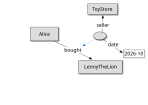

Niklas Lindström, National Library of Sweden
@direction to RDF 1.2 base direction
Support for RDF 1.2 triple terms and rdf:reifies
@annotationJSON-LD-star: github.com/json-ld/json-ld-star
(Thanks to Gregg Kellogg (in memoriam) and Pierre-Antoine Champin.)
In 1.1 mapped to
either rdf:CompoundLiteral
or special i18n: datatype
<html_and_css>
dct:title [ a rdf:CompoundLiteral ;
rdf:value "HTML و CSS: تصميم و إنشاء مواقع الويب" ;
rdf:language "ar" ;
rdf:direction "rtl"
] .
<html_and_css>
dct:title
"HTML و CSS: تصميم و إنشاء مواقع الويب"^^i18n:ar_rtl .
{
"@id": "html_and_css",
"dct:title": {
"@value": "HTML و CSS: تصميم و إنشاء مواقع الويب",
"@language": "ar",
"@direction": "rtl"
}
}
RDF 1.2 direct representation: rdf:dirLangString
<html_and_css>
dct:title
"HTML و CSS: تصميم و إنشاء مواقع الويب"@ar--rtl .
To be rendered as:
HTML و CSS: تصميم و إنشاء مواقع الويب
{
"@id": "html_and_css",
"dct:title": {
"@value": "HTML و CSS: تصميم و إنشاء مواقع الويب",
"@language": "ar",
"@direction": "rtl"
}
}
<Alice> :bought <LennyTheLion> {| a :Purchase ; :seller <ToyStore> ; :date "2026-10" |} .

<Alice> :bought <LennyTheLion> .
{
"@id": "Alice",
"bought": {
"@id": "LennyTheLion"
}
}
<Alice> :bought <LennyTheLion> {| a :Purchase ; :seller <ToyStore> ; :date "2026-10" |} .
{
"@id": "Alice",
"bought": {
"@id": "LennyTheLion",
"@annotation": {
"@type": "Purchase",
"seller": {"@id": "ToyStore"},
"date": "2026-10"
}
}
}
@reifies and @triple used as keys (and the latter indicating a new kind of node), directly corresponding to the RDF terms.
@quote), used as key in reifiers and as @type value for triple terms (leveraging the existing @value node design).
@graph keyword, otherwise following the @quote design.
<< <Alice> :bought <LennyTheLion> >> a :Purchase ; :seller <ToyStore> ; :date "2026-10" .
{
"@quote": {
"@id": "Alice",
"bought": {"@id": "LennyTheLion"}
},
"@type": "Purchase",
"seller": {"@id": "ToyStore"},
"date": "2026-10"
}
[] a :Purchase ; :seller <ToyStore> ; :date "2026-10" ; rdf:reifies <<( <Alice> :bought <LennyTheLion> )>> .
{
"@type": "Purchase",
"seller": {"@id": "ToyStore"},
"date": "2026-10",
"rdf:reifies": {
"@type": "@quote",
"@value": {
"@id": "Alice",
"bought": {"@id": "LennyTheLion"}
}
}
}
Time for questions?